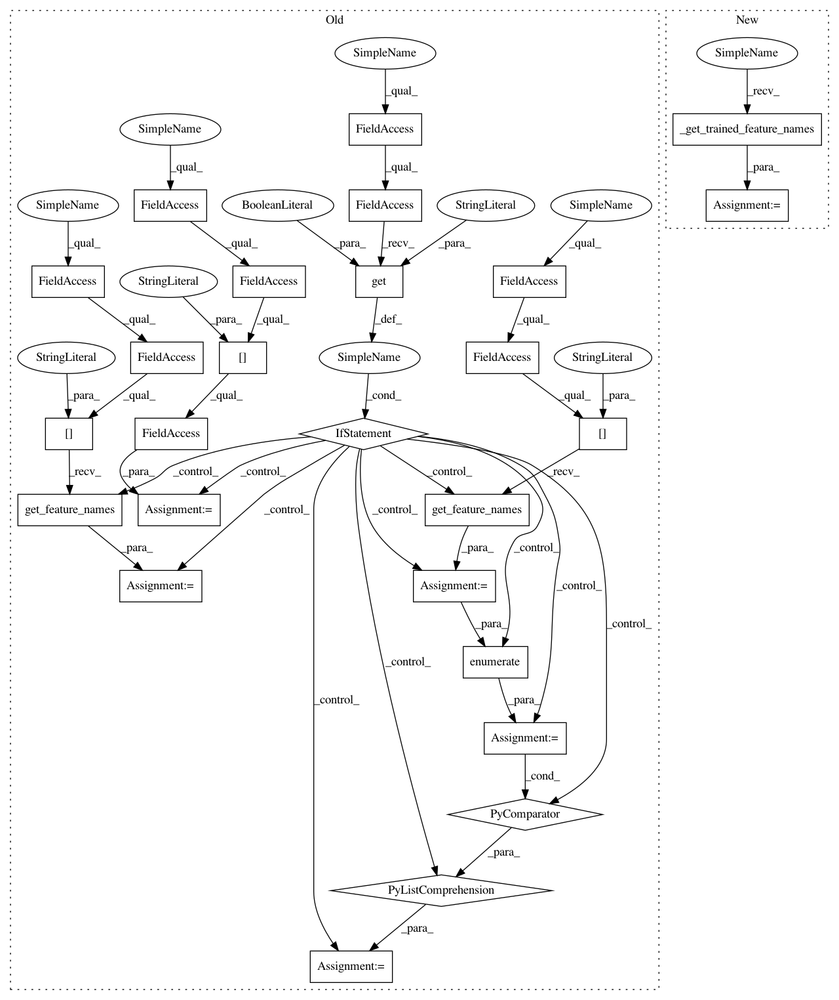

2a901c961b51294530628eabca4820384684a59a,auto_ml/predictor.py,Predictor,_print_ml_analytics_results_random_forest,#Predictor#,346
Before Change
self._get_xgb_feat_importances(self.trained_pipeline.named_steps["final_model"].model)
else:
if self.trained_pipeline.named_steps.get("feature_selection", False):
selected_indices = self.trained_pipeline.named_steps["feature_selection"].support_mask
feature_names_before_selection = self.trained_pipeline.named_steps["dv"].get_feature_names()
trained_feature_names = [name for idx, name in enumerate(feature_names_before_selection) if selected_indices[idx]]
else:
trained_feature_names = self.trained_pipeline.named_steps["dv"].get_feature_names()
trained_feature_importances = self.trained_pipeline.named_steps["final_model"].model.feature_importances_
feature_infos = zip(trained_feature_names, trained_feature_importances)
After Change
self._get_xgb_feat_importances(self.trained_pipeline.named_steps["final_model"].model)
else:
trained_feature_names = self._get_trained_feature_names()
trained_feature_importances = self.trained_pipeline.named_steps["final_model"].model.feature_importances_
feature_infos = zip(trained_feature_names, trained_feature_importances)
In pattern: SUPERPATTERN
Frequency: 3
Non-data size: 26
Instances
Project Name: ClimbsRocks/auto_ml
Commit Name: 2a901c961b51294530628eabca4820384684a59a
Time: 2016-08-22
Author: ClimbsBytes@gmail.com
File Name: auto_ml/predictor.py
Class Name: Predictor
Method Name: _print_ml_analytics_results_random_forest
Project Name: ClimbsRocks/auto_ml
Commit Name: 2a901c961b51294530628eabca4820384684a59a
Time: 2016-08-22
Author: ClimbsBytes@gmail.com
File Name: auto_ml/predictor.py
Class Name: Predictor
Method Name: _get_xgb_feat_importances
Project Name: ClimbsRocks/auto_ml
Commit Name: 2a901c961b51294530628eabca4820384684a59a
Time: 2016-08-22
Author: ClimbsBytes@gmail.com
File Name: auto_ml/predictor.py
Class Name: Predictor
Method Name: _print_ml_analytics_results_regression